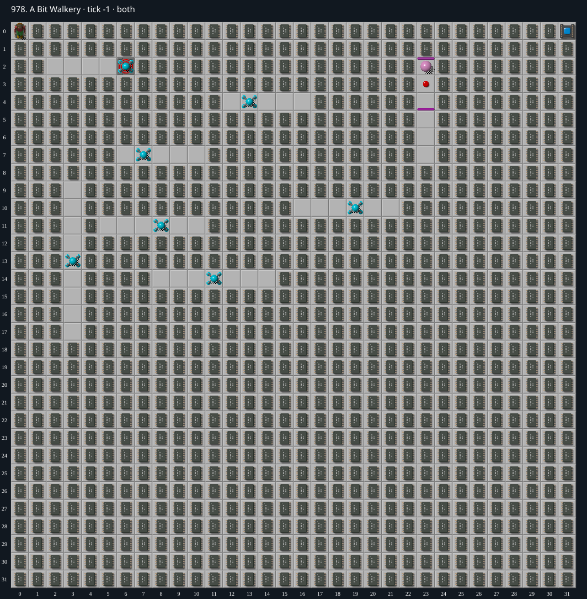

Jacques · Original Tile World MS
978. A Bit Walkery
Verified replayAn ordered sweep clears every region before advancing and wins at tick 9,812 (490.6 seconds). The original Tile World MS and web engines match exactly through all 9,813 ticks.
1940 chips required · 999 second time limit
Verified in both engines. Native Tile World and the web MS engine both completed at tick 9,812 (490.6 seconds), with identical full traces. Verification certificate.
Winning strategy
- Clear the top-left 2×3 rectangle with S S E N W S E N N W E, holding each direction for four ticks. This opens the Walker source outlet into a growing cleared area instead of leaving a saturated pocket behind mandatory chips.
- Clear the adjacent top 2×2 block by alternating visits to its upper pair and lower pair. Both layers of the full 4×3 opening are empty by tick 72.
- Sweep the remaining map in 2×2 regions, following pairs of columns from left to right. Sweep alternate column pairs downward and upward. The final pair, columns 30–31, runs upward toward the exit at (31,0).
- Finish both chip layers of each active region before advancing. Never collect from a future region. At every completed-region transition, all remaining chips lie in at most one connected component; no scattered groups are left for a dangerous return trip.
- Within each small region, choose a safe order of cardinal moves, short delays, and retreats through already-cleared floor. The actual native engine resolves Walker movement and collisions; a seemingly productive pickup is rejected if the following monster phase kills Chip.
- The resulting replay collects all 1,940 required chips and enters the socket/exit at (31,0) at tick 9,812, using seed 0 and stepping 0. All 2,067 recorded moves are cardinal keyboard inputs. The original native MS engine and production web engine have identical initial states, all 9,813 tick snapshots, and final results.
Inspect both layers
The main map shows the initial runtime state. Switch to the buried layer to inspect hidden terrain and items. Hover coordinates are also available in the downloadable SVG.


Recorded checks and attempts
- spatial route construction: Inspected both tile layers and source geometry, then fixed a whole-map order of 255 regions. Bounded native planning selected the local movement order and delays while forbidding future-region pickups.
- independent ordered-route audit: Replayed from tick 0 with no prefix exceptions: all 255 regions fully clear, no future-region pickups, and at most one remaining-chip component at every completed-region transition.
- winning replay: Both engines complete at tick 9,812 with identical initial state, all 9,813 tick snapshots, and final result. Exact staged TWS bytes were read and native stderr was empty. The 281,971,286-byte native trace was compared incrementally.
Scope and limitations
- Verified against the original Tile World MS C engine and production web MS engine. This replay has not been separately tested in Microsoft CHIP.EXE or SuCC.
Evidence
- Structured report
- 978-board-partial-parity.json
- 978-completed-map.png
- 978-connected-partial-parity.json
- 978-jammed-boundary-native.json
- 978-jammed-phase-probe.json
- 978-opening-native-probe.json
- 978-ordered-completion-audit.json
- 978-ordered-halfway.png
- legacy_c/mslogic.c
- scripts/jacques/replay-978.ts
- scripts/jacques/native-stream.ts
- scripts/jacques/harness.ts